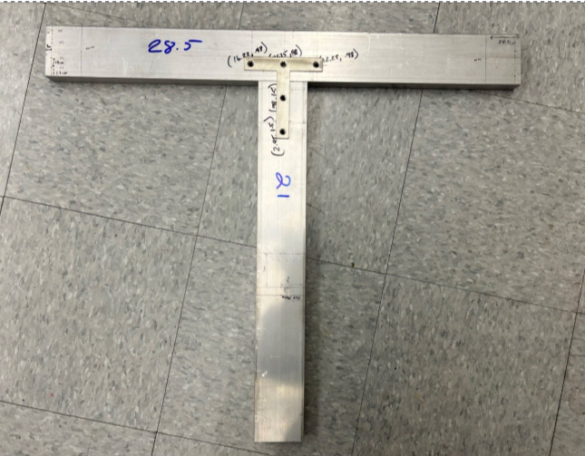

Q1 Milestones

Kinematic Modeling & PID Control Simulation
Our team developed a high-fidelity system dynamics model in MATLAB/Simulink to verify the solar array's scissor-lift deployment. By modeling the electromechanical coupling of the DC motor and lead screw, we tuned a PID controller to achieve a deployment time of 14.13 seconds. This simulation successfully accounted for 12V battery saturation, proving the system meets our RRP requirements with zero steady-state error.

Structural Integrity & Interference Analysis
We performed a full CAD motion study and Finite Element Analysis (FEA) on the solar panel housing and drawer slide assembly. Despite 74 identified points of tooth-belt misalignment in the model, the structural study confirmed no critical collisions. FEA results showed that under a 0.021 psi pressure load, the housing remains structurally sound with minimal deflection, ensuring smooth deployment in field conditions.

Actuator Load Capacity & Safety Factor Validation
To ensure the system could support the 15 lb solar array, we conducted a torque load analysis. We calculated a required linear force of 66.7 N, while the motor capacity was measured at a stall torque of 1.99 Nm. This resulted in a Safety Factor of 15, which far exceeds the industry standard of 1.5. This was physically verified by lifting a 13.2 lb plywood load to full extension in 22 seconds.
Q2 Milestones

Solar Panel Housing Construction and Operation Testing
The solar panel housing underwent two major design iterations. The final housing unit represents a 75% increase in scale over the initial prototype, expanding to 28" x 24" inches to accommodate higher-output panels. Following fabrication, the deployment mechanism was fully motorized using a sled and lead screw system. Successful integration was validated through load-testing the motorized drawers by press fitting the solar panels in their intended drawers and confirming smooth open/close kinematics under full payload.

Chassis Development & Platform Preperation
To optimize the project budget and accelerate drivetrain development, the team utilized a repurposed electric vehicle as the base chassis. Through a process of structural deconstruction, we stripped the original plastic body to expose the core drivetrain and motor assembly. A custom wooden baseboard was then prepared for integration into the frame, providing a rigid mounting surface for the linear actuator system.

Structural T-Frame Design and Fabrication
The team and fabricated a custom T-frame mounting interface to serve as the critical bridge between the solar panel housing and the linear actuators. This phase involved extensive structural analysis to determine the optimal mounting points for load distribution during deployment cycles. By calculating the center of gravity and the resultant forces at full extension, we ensured the T-frame provides maximum stability while maintaining precise alignment. The final T-frame was manufactured from reinforced aluminum and will be detatchable from the solar panel housing.
Q3 Milestones

Place holder milestone title
Placeholder milestone text
Placeholder milestone title
milestone text